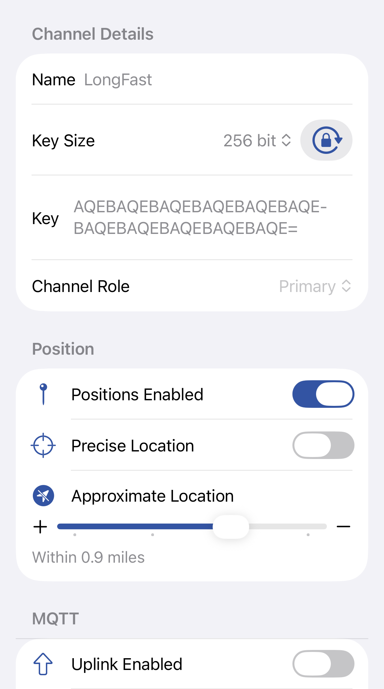
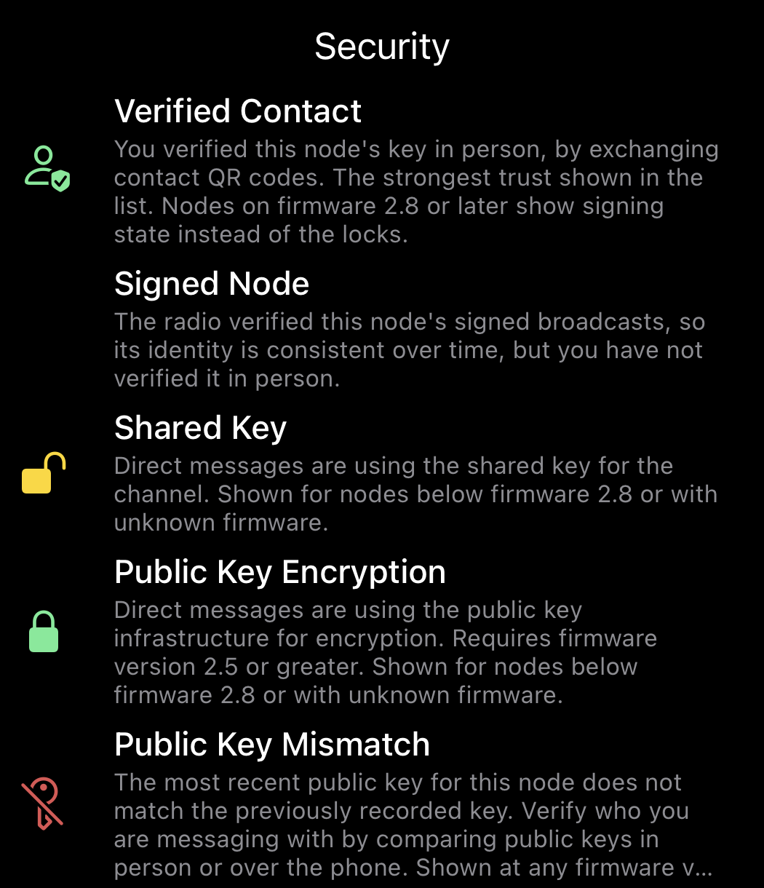
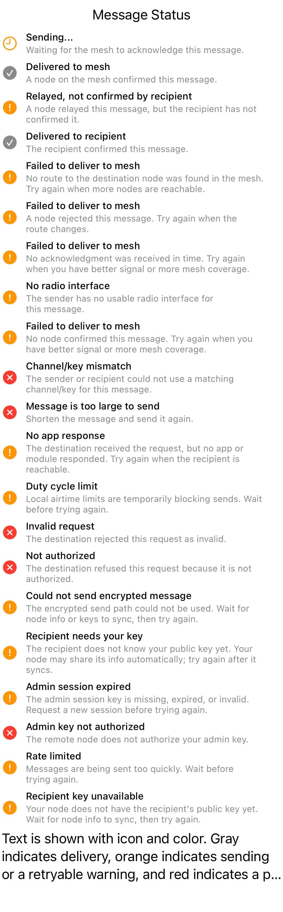
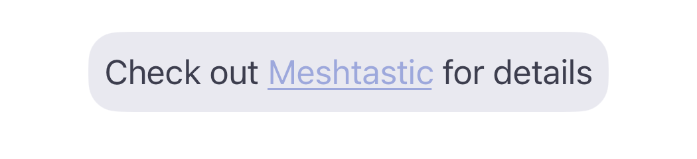
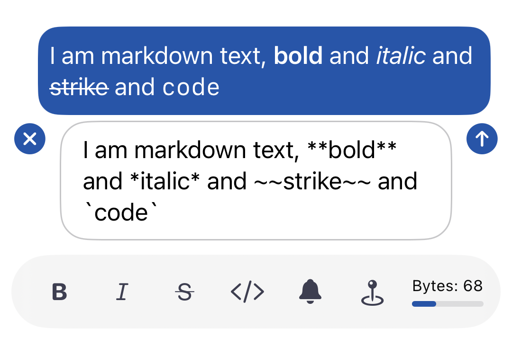
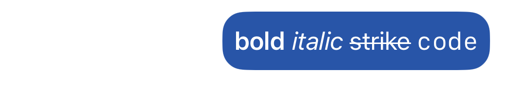

Meshtastic uses a channel system for group broadcasts and direct messages for private one-to-one conversations.
Channel conversations load the most recent 50 messages by default. Scroll to the top and tap Load More to fetch the next batch. This keeps the app responsive on channels with thousands of messages.
| Symbol | Meaning |
|---|---|
| 0 (primary circle) | Primary channel — broadcast packets are sent here. Location data is broadcast from the first channel where it is enabled (firmware 2.7+). |
| 1–7 | Secondary channels — separate messaging groups, each secured by their own key. |

The channel form lets you configure the channel name, encryption key, role, position sharing, and MQTT uplink/downlink settings.
Use Share QR Code from Settings to choose which configured channels to share. The generated Meshtastic channel link includes the selected channel settings and the LoRa config needed for another radio to communicate on the same mesh.
When you open or scan a Meshtastic channel link, review the listed channels and choose whether to Replace Channels or Add Channels. Replace mode overwrites the current radio channel set, while add mode appends the incoming channels when there are free slots and no duplicate channel names.
| Icon | Meaning |
|---|---|
|
Securely Encrypted — the channel uses a 128-bit or 256-bit AES key. |
|
Not Securely Encrypted — the channel uses no key or a 1-byte known key, but is not used for precise location data. |
|
Insecure with Location — the channel is not securely encrypted and is used for precise location data. |
|
Insecure with MQTT — not securely encrypted and precise location data is being uplinked to the internet via MQTT. |
| Element | Meaning |
|---|---|
 |
Favorites — favorited contacts and nodes with recent messages appear at the top of the contact list. |
 |
Long Press Actions — long press to favorite or mute the contact, or delete a conversation. |

| Icon | Meaning |
|---|---|
|
Shared Key — direct messages are using the shared key for the channel. |
|
Public Key Encryption — direct messages use the public key infrastructure for encryption. Requires firmware 2.5 or later. |
 |
Public Key Mismatch — the most recent public key for this node does not match the previously recorded key. Verify who you are messaging with by comparing public keys in person or over the phone. |
A green shield (🛡️) on a broadcast message bubble means the message is signed and verified — the radio cryptographically verified an XEdDSA signature over the sender's identity key (firmware 2.8 or later). The shield answers a different question from the encryption lock: the lock means a direct message is private, while the shield means a broadcast is authentic (you know who really sent it).
Long press any message and tap Tapback to send an emoji reaction.
When someone reacts to a message, you get a notification such as Alice reacted 👍 to "See you soon" — unless the sender (for a direct message) or the channel is muted. Reactions notify without adding to the conversation's unread badge. If your radio hasn't seen the message that was reacted to, the reaction is saved but no notification is shown (there'd be nothing to display it against).
Tap the Find in conversation search field below the title of any channel or direct-message conversation, then type to search that conversation's message text.
Search covers the text of channel broadcasts and direct messages, matching exactly the messages each conversation shows. Emoji reactions aren't matched.

The message status row combines a short label, SF Symbol icon, and color. Color reinforces the text; it is not the only signal.
| Icon | Color | Status | Description |
|---|---|---|---|
clock |
Orange | Sending... | Waiting for the mesh to acknowledge this message. |
checkmark.circle.fill |
Gray | Delivered to mesh | A node on the mesh confirmed this channel message. |
checkmark.circle.fill |
Gray | Delivered to recipient | The direct-message recipient confirmed this message. |
exclamationmark.circle.fill |
Orange | Relayed, not confirmed by recipient | A node relayed this direct message, but the recipient has not confirmed it. Retry is available. |
exclamationmark.circle.fill |
Orange | Failed to deliver to mesh | Delivery was not confirmed after retries, timeout, or an explicit negative acknowledgement. Retry is available. |
xmark.circle.fill |
Red | Channel/key mismatch | The sender or recipient could not use a matching channel/key for this message. |
xmark.circle.fill |
Red | Message is too large to send | The encoded packet exceeds the LoRa message size limit. Shorten the message before sending again. |
exclamationmark.circle.fill |
Orange | No radio interface | The sender has no usable radio interface for this message. Retry is available. |
exclamationmark.circle.fill |
Orange | Duty cycle limit | Local airtime limits are temporarily blocking sends. Retry is available after waiting. |
exclamationmark.circle.fill |
Orange | Rate limited | Messages are being sent too quickly. Retry is available after waiting. |
exclamationmark.circle.fill |
Orange | No app response | The destination received the request, but no app or module responded. Retry is available. |
xmark.circle.fill |
Red | Invalid request | The destination rejected the request as invalid. |
xmark.circle.fill |
Red | Not authorized | The destination refused this request because it is not authorized. |
exclamationmark.circle.fill |
Orange | Could not send encrypted message | The encrypted PKI send path could not be used. Retry is available after node info or keys sync. |
exclamationmark.circle.fill |
Orange | Recipient needs your key | The recipient does not know your public key yet. Retry is available after node info syncs. |
exclamationmark.circle.fill |
Orange | Recipient key unavailable | Your node does not have the recipient's public key yet. Retry is available after node info syncs. |
exclamationmark.circle.fill |
Orange | Admin session expired | The admin session key is missing, expired, or invalid. Retry is available after requesting a new session. |
xmark.circle.fill |
Red | Admin key not authorized | The remote node does not authorize your admin key. |
Links in message bubbles — including URLs, Meshtastic channel links, and markdown [text](url) links — are styled with an underline and the design standards Link color (Blue 400). This makes links visually distinct from regular message text in both light and dark mode. Tapping a link opens it in the system browser (Safari on the standard/default setup), except for Meshtastic channel links and contact links in the exact meshtastic.org/v/#... or www.meshtastic.org/v/#... form, which open the appropriate in-app import flow. Meshtastic documentation links, including meshtastic.org/docs/..., continue to open in the system browser.

On iOS 18 and later, formatting buttons appear in the compact toolbar below the compose field after you have typed at least 3 characters. The formatting buttons share the toolbar row with the Alert bell, Position pin, and byte counter — all rendered as compact icons. The toolbar scrolls horizontally if it exceeds the screen width.

| Button | Style | Markdown Syntax |
|---|---|---|
| Bold SF Symbol | Bold | **text** |
| Italic SF Symbol | Italic | *text* |
| Strikethrough SF Symbol | Strikethrough | ~~text~~ |
| Code SF Symbol | Code | `text` |
When the compose field contains markdown syntax, a preview bubble appears above the compose field showing how the message will look when sent. The preview updates in real time as you type. When no markdown is present, the preview is hidden.
Markdown formatting is also rendered in the channel and user message list previews, so you can see formatted text at a glance.
| Example | Description |
|---|---|
| Preview showing bold formatting applied to text. | |
 |
Preview showing bold, italic, code formatting combined. |
When you select text that already contains markdown delimiters and apply a different style, the existing delimiters are stripped and replaced with the new style. For example, selecting **bold** and tapping Strikethrough produces ~~bold~~.
After applying a style, the selection expands to include the delimiters (e.g., selecting dolphin and tapping Bold selects **dolphin**), making it easy to toggle off or switch to a different style immediately.
If your selection partially overlaps existing delimiters, the selection automatically expands to include the full delimiter run before formatting. Any orphaned (unpaired) delimiter characters left elsewhere in the text are cleaned up automatically. This prevents garbled markdown like th***~~~~~~e~~.
The formatting toolbar is only available on iOS 18 and later. Users on iOS 17.x see the standard compose field with no changes to their experience.
On Mac Catalyst, pressing Enter sends the message. Press Shift+Enter to insert a line break. The character palette button remains available alongside the formatting buttons.
**bold** uses 4 extra bytes for the ** pairs). The byte counter in the toolbar shows remaining space.